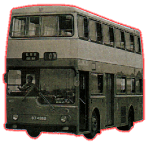

MCW-Scania
-
Metropolitan
 |
車隊編號 Model 引擎 Engine 容積 Engine Capacity 波箱 Gearbox 車身 Body Build 體積 Volume 載客量 Passenger 服役年份 Year |
: MS1, MS2 : Scania DC11C06 (190bhp) : 不詳 : Scania Automatic Torque Converter : Metro-Cammell Weymann : 10096L X 2500W X 4407H(mm) : 不詳 : 1975 - 1989 |
都城嘉慕[MCW]與世冠[Scania]合作而成的雙層巴士，由Scania所製的巴士底盤，配上MCW的車身，擁有全氣墊式懸掛系統，大馬力引擎(190bhp)，全自動變速箱，中置式冷卻水箱，以當年已經是巴士中的最佳配撘。中巴於1975年購入兩部倫敦版本車款，高低級車頭擋風玻璃成為MCW車身特徵，由於有良好的懸掛系統，所以乘客們都非常滿意，只可惜因零件短缺問題，此兩巴在1987年先後離開車隊。MCW & Scania此合作後，大家都各自分途推出自家生產的雙層巴士，在往後的型號會作出介紹。